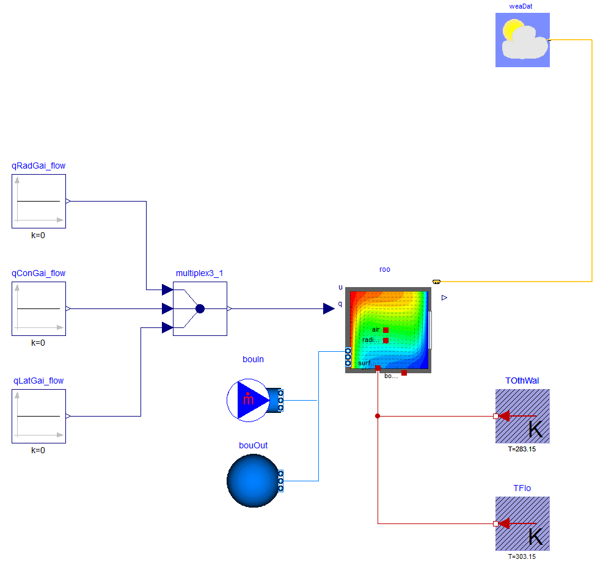

Tutorial with step by step instructions for how to do coupled simulation
This package contains the tutorials NaturalConvection and MixedConvection with step by step instructions for how to build such models.
Extends from Modelica.Icons.Information (Icon for general information packages).
| Name | Description |
|---|---|
| Tutorial for Mixed Convection case | |
| Tutorial for Natural Convection case |
 Buildings.Rooms.Examples.FFD.Tutorial.MixedConvection
Buildings.Rooms.Examples.FFD.Tutorial.MixedConvection
Tutorial for Mixed Convection case

This tutorial gives step by step instructions on building and simulating a mixed convection model. The model tests the coupled simulation of Buildings.Rooms.CFD with the FFD program by simulating ventilation with mixed convection in an empty room.
The temperature of the floor is fixed at 30ˆC and the temperature of the walls and the ceiling are fixed at 10ˆC. The supply air temperature is fixed at 10ˆC.
Figure (a) shows the schematic of the FFD simulation and Figure (b) shows the velocity vectors and temperatures on the X-Z plane at Y = 0.5 m as simulated by the FFD.

Figure (a)

Figure (b)
This section describes step by step how to build and simulate the model.
Add the following model components into the MixedConvection model:
roo.
weaDat.
qRadGai_flow, qConGai_flow and qLatGai_flow, respectively.
multiple_x3.
TFlo and TOthWal respectively.
Please note that it is necessary to declare TOthWal as a vector of 5 elements.
roo.
Name it as bouIn.
roo is connected.
Name it as bouOut.
In the textual editor mode, add the medium and the number of surfaces as below:
package MediumA = Buildings.Media.GasesConstantDensity.MoistAirUnsaturated (T_default=283.15); parameter Integer nConExtWin=0; parameter Integer nConBou=0; parameter Integer nSurBou=6; parameter Integer nConExt=0; parameter Integer nConPar=0;
Edit roo as below:
Buildings.Rooms.CFD roo(
redeclare package Medium = MediumA,
surBou(
name={"East Wall","West Wall","North Wall","South Wall","Ceiling","Floor"},
A={0.9,0.9,1,1,1,1},
til={Buildings.Types.Tilt.Wall,
Buildings.Types.Tilt.Wall,
Buildings.Types.Tilt.Wall,
Buildings.Types.Tilt.Wall,
Buildings.Types.Tilt.Ceiling,
Buildings.Types.Tilt.Floor},
each absIR=1e-5,
each absSol=1e-5,
each boundaryCondition=Buildings.Rooms.Types.CFDBoundaryConditions.Temperature),
lat = 0.012787839282646,
AFlo = 1*1,
hRoo = 1,
linearizeRadiation = false,
useCFD = true,
sensorName = {"Occupied zone air temperature", "Velocity"},
cfdFilNam = "modelica://Buildings/Resources/Data/Rooms/FFD/Tutorial/MixedConvection.ffd",
nConExt = nConExt,
nConExtWin = nConExtWin,
nConPar = nConPar,
nConBou = nConBou,
nSurBou = nSurBou,
nPorts = 2,
portName={"Inlet","Outlet"},
samplePeriod = 6);
Set the parameters for the following components:
qRadGai_flow, qConGai_flow and qLatGai_flow to 0.
TFlo to 303.15 Kelvin.
TOthWal to 283.15 Kelvin.
Set the values for the parameters of bouIn and bouOut as below:
Fluid.Sources.MassFlowSource_T bouIn( redeclare package Medium = MediumA, nPorts=1, m_flow=0.1, T=283.15);
Fluid.Sources.FixedBoundary bouOut( redeclare package Medium = MediumA, nPorts=1);
Connect the components as shown in the figure below.

Confirm in the textual editor that the connections to
roo.ports are as follows:
connect(bouIn.ports[1], roo.ports[1]); connect(bouOut.ports[1], roo.ports[2]);
Use the Simplified CFD Interface (SCI) to generate the input file for the FFD.
input.cfd (mesh file) and zeroone.dat (obstacles file).
MixedConvection.cfd and MixedConvection.dat, respectively.
Revise the FFD parameter input file MixedConvection.ffd (an example file is available in Buildings/Resources/Data/Rooms/FFD/Tutorial/):
inpu.parameter_file_format SCI inpu.parameter_file_name Resources/Data/Rooms/FFD/Tutorial/MixedlConvection.cfd inpu.block_file_name Resources/Data/Rooms/FFD/Tutorial/MixedConvection.dat prob.nu 0.000015 // Kinematic viscosity prob.rho 1.205 // Density prob.gravx 0 // Gravity in x direction prob.gravy 0 // Gravity in y direction prob.gravz -9.81 // Gravity in z direction prob.cond 0.0257 // Conductivity prob.Cp 1006.0 // Specific heat capacity prob.beta 0.00343 // Thermal expansion coefficient prob.diff 0.00001 // Diffusivity for contaminants prob.coeff_h 0.0004 // Convective heat transfer coefficient near the wall prob.Temp_Buoyancy 10.0 // Reference temperature for calculating buoyance force init.T 10.0 // Initial condition for Temperature init.u 0.0 // Initial condition for velocity u init.v 0.0 // Initial condition for velocity v init.w 0.0 // Initial condition for velocity w
MixedConvection.ffd, MixedConvection.dat, and MixedConvection.cfd in the
directory Buildings/Resources/Data/Rooms/FFD/Tutorial/.
180 seconds and choose, for example, the Radau solver.
Buildings/Resources/Image/Rooms/Examples/FFD/Tutorial/MixedConvection.mcr that will generate the temperature contour and velocity vectors shown in the Figure (b).
Note: Tecplot is needed for this.
Extends from Modelica.Icons.Example (Icon for runnable examples).
| Type | Name | Default | Description |
|---|---|---|---|
| Integer | nConExtWin | 0 | Number of constructions with a window |
| Integer | nConBou | 0 | Number of surface that are connected to constructions that are modeled inside the room |
| Integer | nSurBou | 6 | Number of surface that are connected to the room air volume |
| Integer | nConExt | 0 | Number of exterior constructions withour a window |
| Integer | nConPar | 0 | Number of partition constructions |
Buildings.Rooms.Examples.FFD.Tutorial.NaturalConvection
Tutorial for Natural Convection case

This tutorial gives step by step instructions for building and simulating a natural convection model. The model tests the coupled simulation of Buildings.Rooms.CFD with the FFD program by simulating the natural convection in an empty room with only surface boundary conditions.
The Rayleigh number is a dimensionless number associated with natural convection, defined as
Ra = g β (Tw-Te)L3 ⁄ (ν α)
To get a Rayleigh number of 1E5, the flow properties are manually set as acceleration due to gravity gz=-0.01 m/s2, thermal expansion coefficient β=3e-3 K-1, kinematic viscosity ν=1.5e-5 m2/s, thermal diffusivity α=2e-5 m2/s, and characteristic length L=1 m.
Figure (a) shows the schematic of the FFD simulation. The following conditions are applied in Modelica.:

Figure (a)
Figure (b) shows the velocity vectors and temperature contour in degree Celsius on the X-Z plane at Y = 0.5 m as simulated by the FFD.

Figure (b)
More details of the case description can be found in Zuo et al. (2012).
This section describes step by step how to build and simulate the model.
Add the following component models to the NaturalConvection model:
roo.
weaDat.
qRadGai_flow, qConGai_flow and qLatGai_flow, respectively.
multiple_x3.
TeasWal and TwesWal, respectively.
fixedHeatFlow[nSurBou - 2].
In the textual editor mode, add the medium and the number of surfaces as shown below:
Buildings.Rooms.CFD roo(
package MediumA = Buildings.Media.GasesConstantDensity.MoistAirUnsaturated(
T_default=283.15);
parameter Integer nConExtWin=0;
parameter Integer nConBou=0;
parameter Integer nSurBou=6;
parameter Integer nConExt=0;
parameter Integer nConPar=0;
Edit roo as below:
edeclare package Medium = MediumA,
surBou(
name={"East Wall","West Wall","North Wall","South Wall","Ceiling","Floor"},
each A=1*1,
til={Buildings.Types.Tilt.Wall,
Buildings.Types.Tilt.Wall,
Buildings.Types.Tilt.Wall,
Buildings.Types.Tilt.Wall,
Buildings.Types.Tilt.Ceiling,
Buildings.Types.Tilt.Floor},
each absIR=1e-5,
each absSol=1e-5,
boundaryCondition={
Buildings.Rooms.Types.CFDBoundaryConditions.Temperature,
Buildings.Rooms.Types.CFDBoundaryConditions.Temperature,
Buildings.Rooms.Types.CFDBoundaryConditions.HeatFlowRate,
Buildings.Rooms.Types.CFDBoundaryConditions.HeatFlowRate,
Buildings.Rooms.Types.CFDBoundaryConditions.HeatFlowRate,
Buildings.Rooms.Types.CFDBoundaryConditions.HeatFlowRate}),
lat = 0.012787839282646,
AFlo = 1*1,
hRoo = 1,
linearizeRadiation = false,
useCFD = true,
sensorName = {"Occupied zone air temperature", "Velocity"},
cfdFilNam = "modelica://Buildings/Resources/Data/Rooms/FFD/Tutorial/NaturalConvection.ffd",
nConExt = nConExt,
nConExtWin = nConExtWin,
nConPar = nConPar,
nConBou = nConBou,
nSurBou = nSurBou,
T_start=273.15,
samplePeriod = 60);
Connect components as shown in the figure below.

qRadGai_flow, qConGai_flow and qLatGai_flow to 0.
fixedHeatFlow to 0.
TEasWal to 273.15 Kelvin.
TWesWal to 274.15 Kelvin.
input.cfd (mesh file) and zeroone.dat (obstacles file).
NaturalConvection.cfd and NaturalConvection.dat, respectively.
NaturalConvection.ffd (an example file is provided in Buildings/Resources/Data/Rooms/FFD/Tutorial/):
inpu.parameter_file_format SCI inpu.parameter_file_name Resources/Data/Rooms/FFD/Tutorial/NaturalConvection.cfd inpu.block_file_name Resources/Data/Rooms/FFD/Tutorial/NaturalConvection.dat prob.nu 1.5e-5 // Kinematic viscosity prob.rho 1 // Density prob.gravx 0 // Gravity in x direction prob.gravy 0 // Gravity in y direction prob.gravz -0.01 // Gravity in z direction prob.cond 0.02 // Conductivity prob.Cp 1000.0 // Specific heat capacity prob.beta 3e-3 // Thermal expansion coefficient prob.diff 0.00001 // Diffusivity for contaminants prob.alpha 2e-5 // Thermal diffusivity prob.coeff_h 0.0004 // Convective heat transfer coefficient near the wall prob.Temp_Buoyancy 0.0 // Reference temperature for calculating buoyance force init.T 0.0 // Initial condition for Temperature init.u 0.0 // Initial condition for velocity u init.v 0.0 // Initial condition for velocity v init.w 0.0 // Initial condition for velocity w
Please note that some of the physical properties were manipulated to obtaine the desired Rayleigh Number of 105.
NaturalConvection.ffd, NaturalConvection.dat, and NaturalConvection.cfd at Buildings/Resources/Data/Rooms/FFD/Tutorial.
7200 seconds and choose for example the Radau solver.
Buildings/Resources/Image/Rooms/Examples/FFD/Tutorial/NaturalConvection.mcr that will generate the temperature contour and velocity vectors shown in the Figure (b).
Note: Tecplot is needed for this.
Extends from Modelica.Icons.Example (Icon for runnable examples).
| Type | Name | Default | Description |
|---|---|---|---|
| Integer | nConExtWin | 0 | Number of constructions with a window |
| Integer | nConBou | 0 | Number of surface that are connected to constructions that are modeled inside the room |
| Integer | nSurBou | 6 | Number of surface that are connected to the room air volume |
| Integer | nConExt | 0 | Number of exterior constructions withour a window |
| Integer | nConPar | 0 | Number of partition constructions |